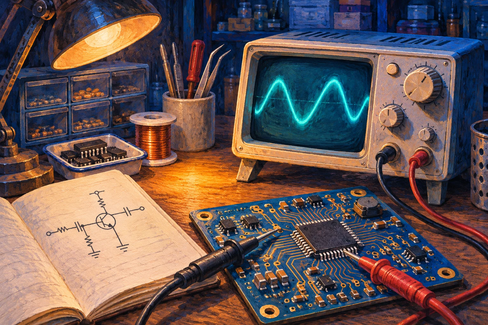

电源 · 测量方法
纹波真的有那么大吗？
用短接地、统一带宽和可重复的测点，把测到的噪声分清楚。
示波器硬件工程师的工作台笔记
从原理图到示波器，把设计为什么这样做、遇到问题怎么查，一篇一篇讲清楚。

按主题浏览，或从眼前的故障找一篇。
用短接地、统一带宽和可重复的测点，把测到的噪声分清楚。
示波器沿着供电和地走一圈，找出电容放得很近、回路却很远的情况。
去耦从参考平面、过孔和开槽三个位置，检查高速信号的回流路径。
回流路径用上升时间和低电平灌电流给电阻划一个范围，再到板上验证。
I²C接电前检查什么、先量哪一路，以及看到哪些现象应该停下来。
板级调试先看 TX 上有没有边沿，再分清接线、电平、波特率和固件问题。
UART试试更短的关键词，例如「电容」「上电」或「UART」。